ワイヤーフレーム
ワイヤーフレーム作成方法
トップページは「価値訴求 → 理解促進 → 信頼形成 → 行動喚起」の順で情報を配置し、初回訪問でも迷わず問い合わせまたは購入導線へ進める構成とした。
ページの目的は「想いを伝えたいユーザーが、サービスの魅力と安心感を短時間で理解し、行動を起こせること」とした。
ターゲットは「20代後半から30代前半の女性。スマートフォン中心で情報収集し、贈り物選びで失敗したくなく、写真・口コミ・実績を重視する層」を想定している。
トップページ
トップページのワイヤーフレーム案を以下に示す。ヒーローを最も大きく取り、サービス紹介、実績、CTA、フッターの順で自然に視線が流れる構成とした。
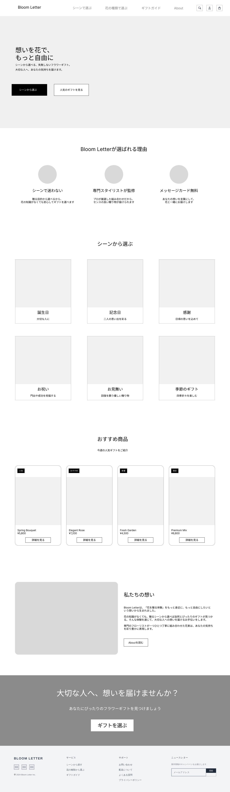
ヘッダー
ロゴ、グローバルナビ、アイコン導線を横並びで配置する。高さはページ全体の約6〜8%を想定。ページ遷移をすぐに行える状態を保ちつつ、ヒーローの印象を邪魔しないようにコンパクトな設計としている。
ヒーローセクション
キャッチコピー、リード文、主CTA、補助CTAを配置する。高さはページ全体の約18〜22%を想定。訪問直後に「花で想いを届けるサービス」であることと、次に取れる行動を明確に伝えるため、最上部で最も広い余白を持たせている。
サービス紹介
3つの特徴をアイコン付きで横並びに配置する。高さはページ全体の約10〜12%。情報を細かく読む前に、Bloom Letterの魅力を短く把握できるよう、ヒーロー直後に要点を整理して配置している。
シーン別導線
贈る相手や目的に応じたカテゴリカードを2段で6件配置する。高さはページ全体の約20〜24%。ユーザーが商品一覧を最初から探す負担を減らし、「用途から選ぶ」という分かりやすい入口を作るため中央に大きく配置している。
おすすめ商品
商品カードを4件横並びで配置し、画像、商品名、価格、詳細導線を見せる。高さはページ全体の約16〜18%。カテゴリ導線の後に具体的な商品イメージを見せることで、購入検討を一段進めやすくする意図がある。
私たちの想い
左にビジュアル、右に説明文とCTAを置く2カラム構成とする。高さはページ全体の約12〜14%、横比率は画像6：テキスト4を推奨。商品訴求だけでなくブランドの姿勢を伝え、安心感と共感を補強する役割を持たせている。
CTA
濃色背景の帯で行動喚起コピーとボタンを中央配置する。高さはページ全体の約8〜10%。ページを一通り見た後のタイミングで問い合わせや相談へ進みやすくするため、終盤に視線を止める強い面として配置している。
フッター
ブランド情報、サービスリンク、サポート、SNS導線を整理して配置する。高さはページ全体の約6〜8%。必要情報を最後にまとめ、回遊導線を補完しながらページ全体を落ち着いて閉じる役割を持たせている。
下層ページ
下層ページ用に作成したワイヤーフレームを以下に配置する。各ページの役割が分かるよう、ページ名ごとに整理した。
シーンから選ぶページ
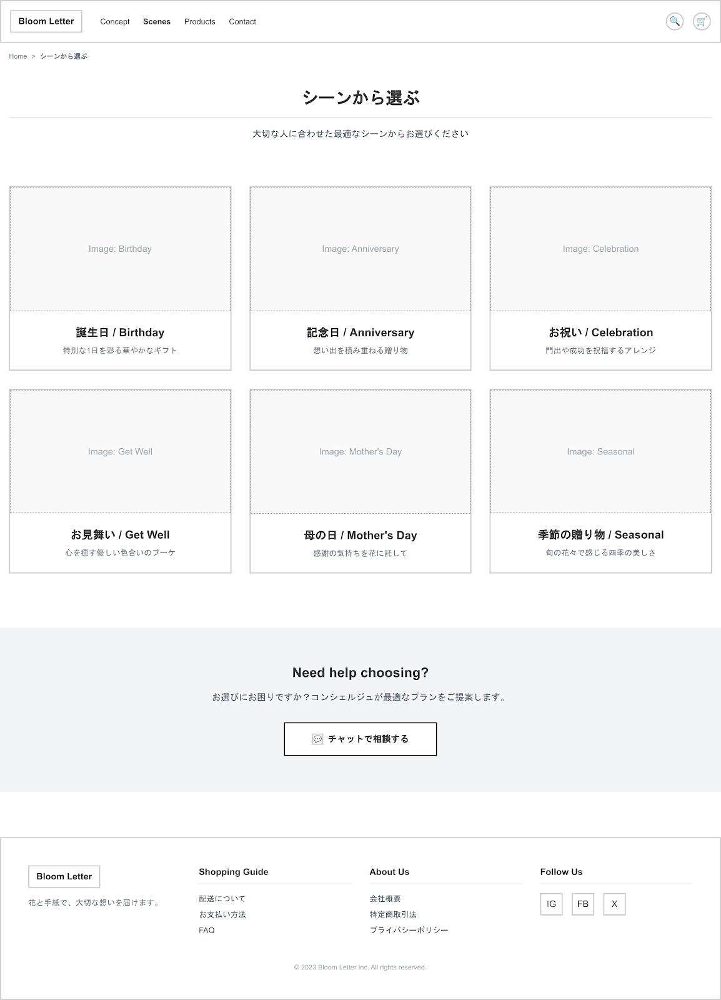
商品一覧ページ
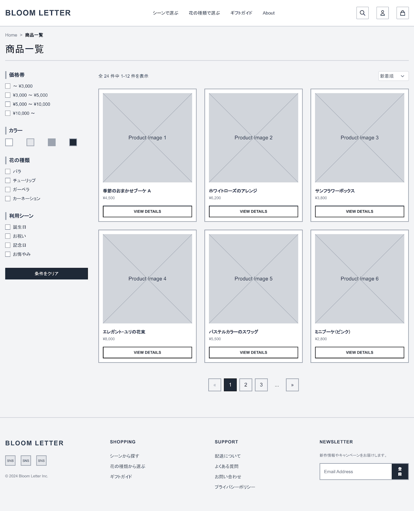
商品詳細ページ
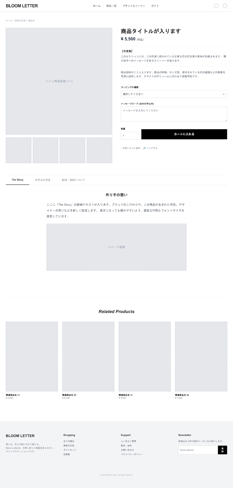
Aboutページ
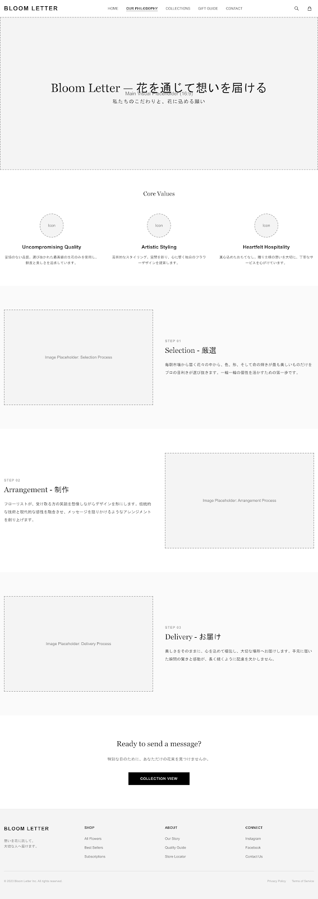
お問い合わせページ
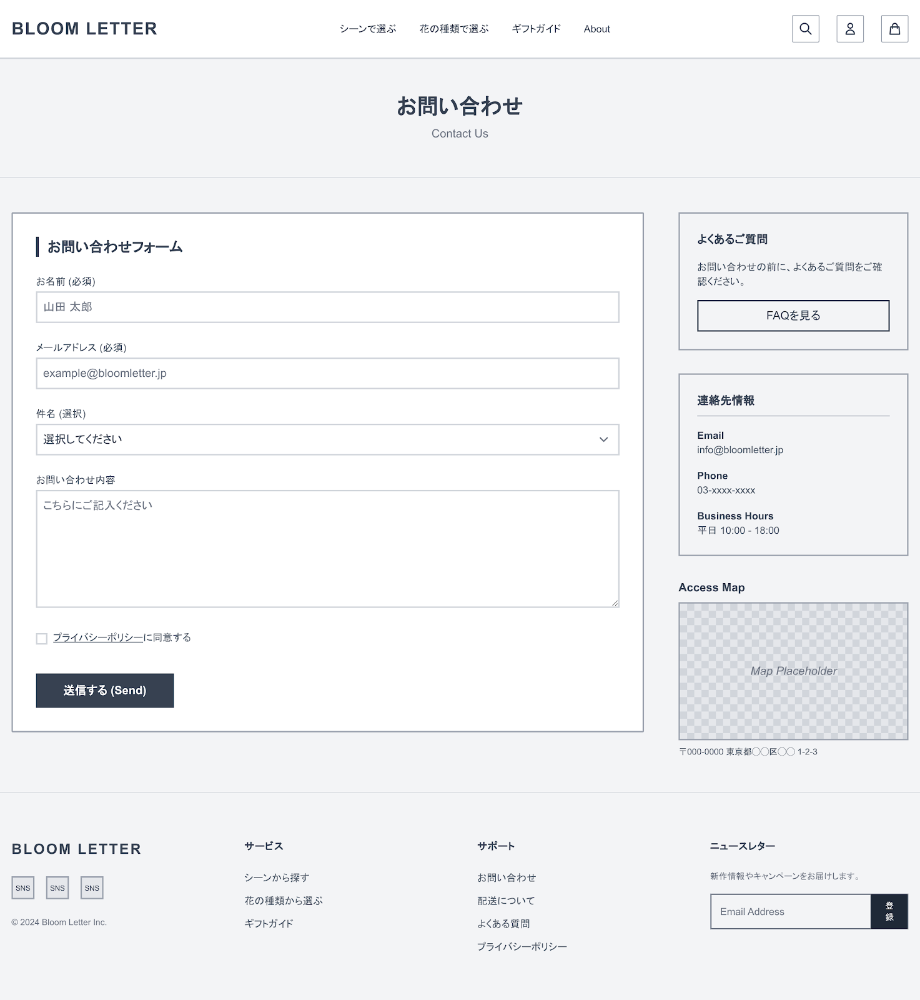
Webアプリケーション画面
主要なWebアプリ画面を以下に配置する。管理操作の流れが追いやすいよう、ログインから登録・編集まで順に整理した。
ログイン画面
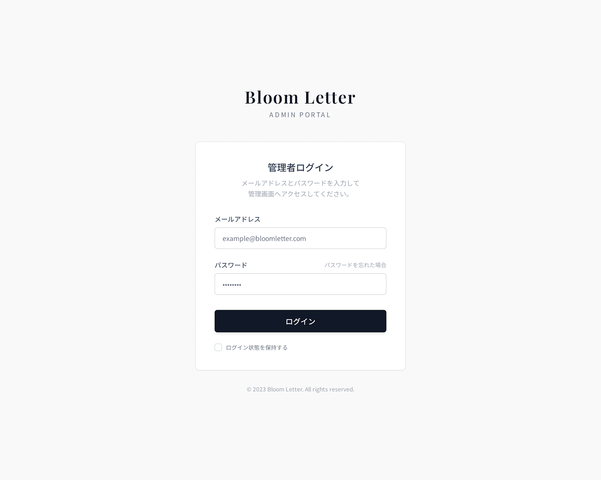
商品一覧画面
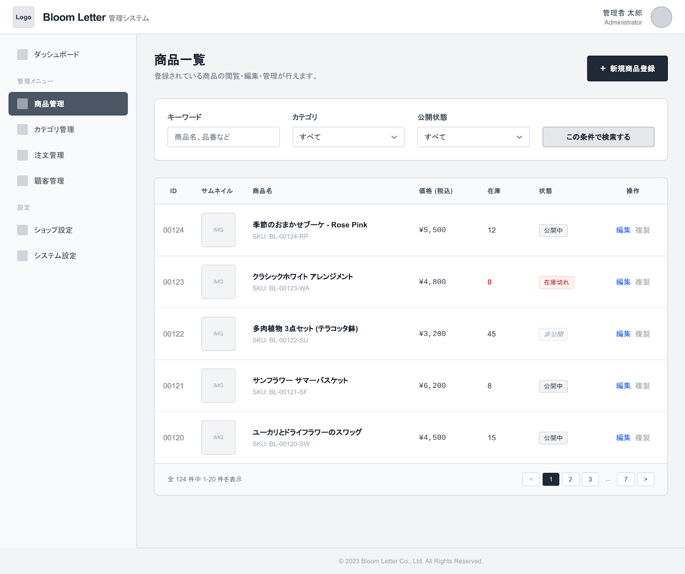
商品管理画面
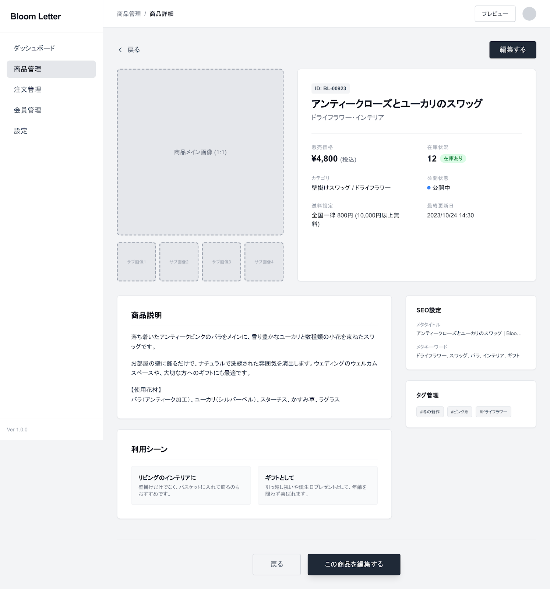
商品新規登録画面
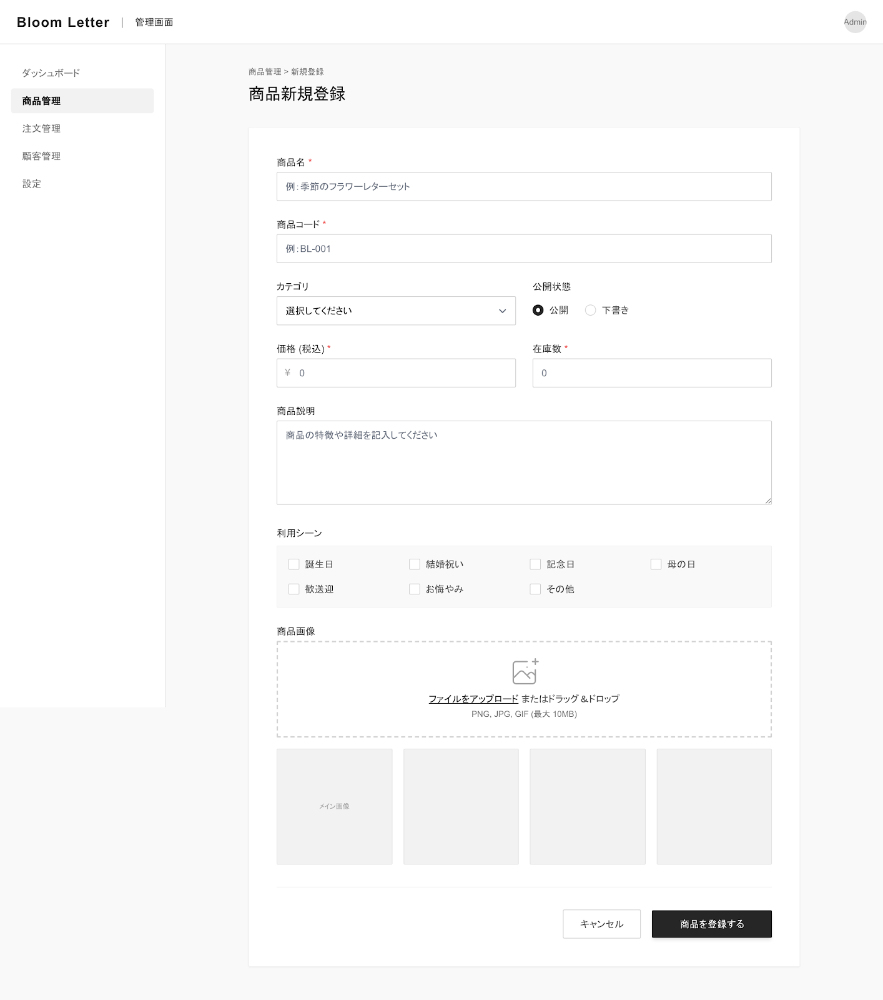
商品編集画面
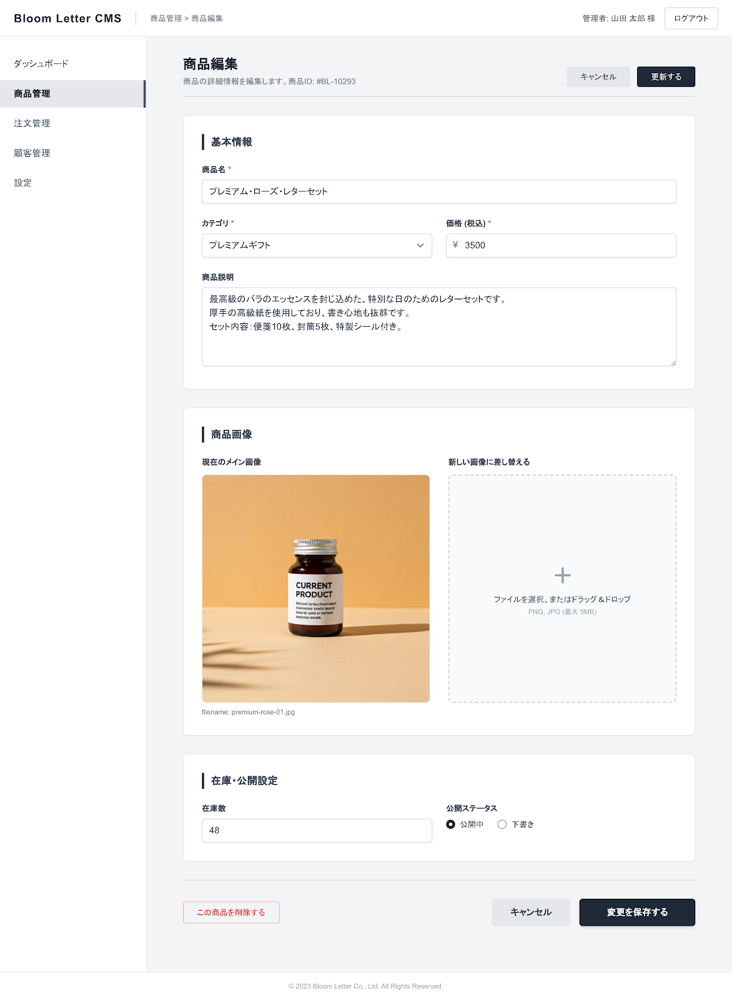
スマートフォン版
トップページのスマートフォン版ワイヤーフレームを以下に示す。縦スクロール前提で情報を1カラムに整理し、CTAまで自然に到達できる構成としている。
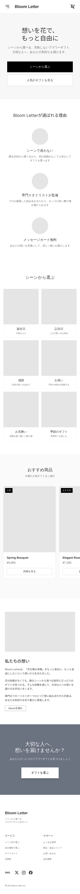